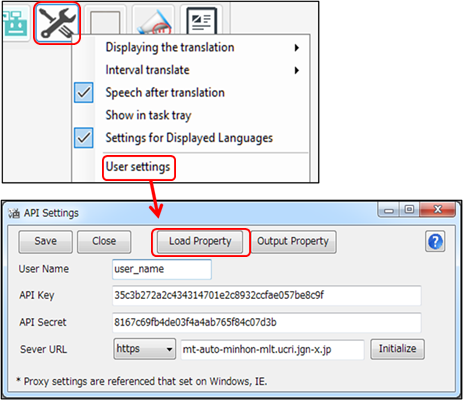
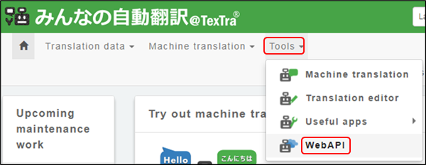
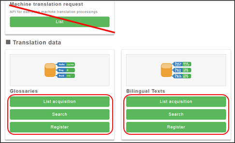
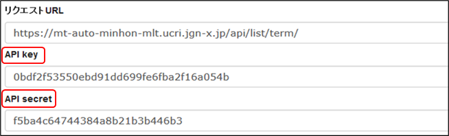
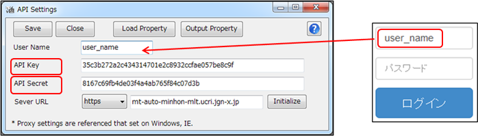

User settings
To use
the website “XXX,” you first need to complete your User
Settings.

Click the "Load Settings" button,
and specify the "setup.ini" file included
in the zip folder when you downloaded this
application.
The API settings will be configured
automatically.
※ The
"Server URL" entered on this screen is not the "Machine Translation API URL"
described in the "Translation Settings"
section.
Settings can also be
obtained from the website.
After logging in, select
"WebAPI" from the menu.

Click on any API button
on the Web API list.

Copy the "API
Key" and "API Secret" from the displayed screen,
and
paste them into the API settings page of TexTra.

For the "User Name",
enter the user ID used when logging in to the website.


① This is the
API server configuration.
In most cases, you don't
need to change it.
If you modify the URL, be sure to
also configure the protocol (http or https).